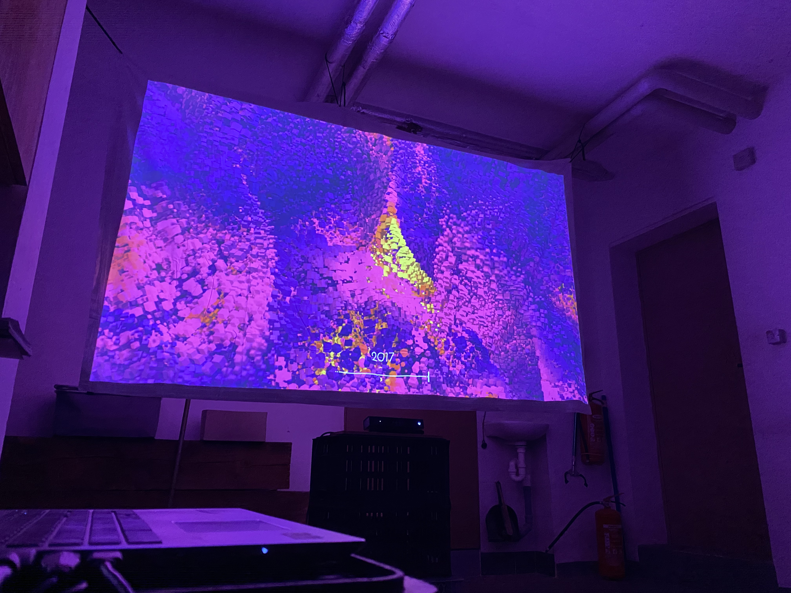
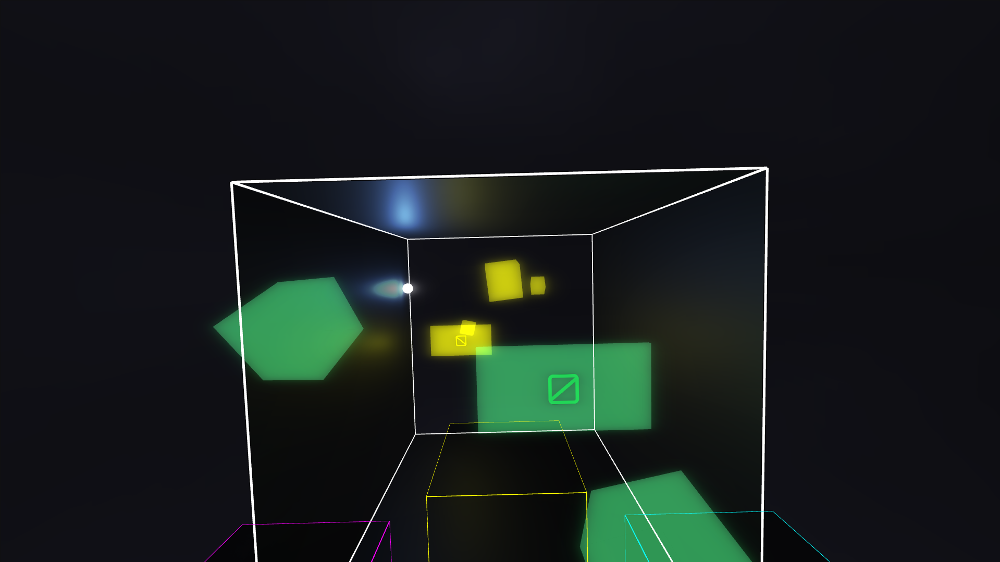

VR-Pong
VR-Pong ist ein co-located Multiplayer VR-Spiel, bei welchem bis zu vier Spieler in
einer
virtuellen
Welt gegeneinander 3D-Pong spielen können. Das Besondere istm, dass die Spieler sich
dafür
in der
echten Welt treffen und so ein neues Gefühl des gemeinsamen VR-Erlebens erfahren können.
Das Projekt war Teil meiner Master-Thesis an der HFU. VR-Pong wurde fürs Web mit webXR
entwickelt
und ist so ohne Installation über den Browser spielbar.
Aktuell wird das Spiel teils auf Messen für Besucher ausgestellt.
Tools: webXR, node.js, babylon.js, typescript


